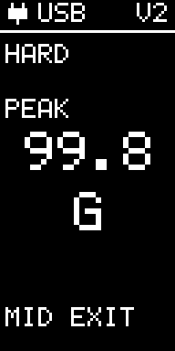
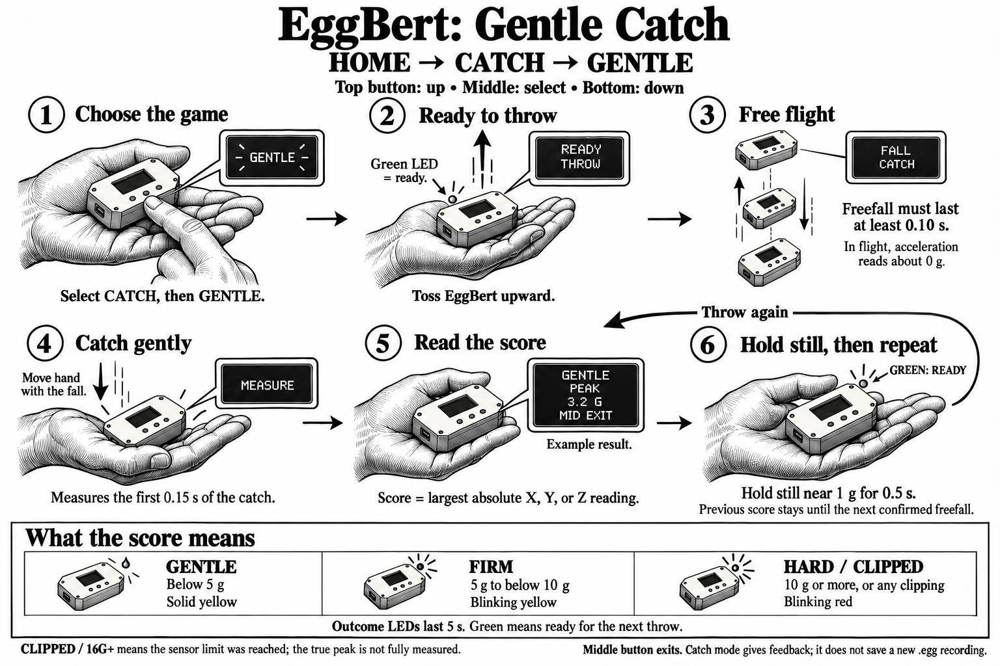

Gentle Catch
Current controls
- Wait for READY, then throw EggBert and catch it gently.
- After confirmed freefall, it measures the catch and shows GENTLE, FIRM or HARD with the peak acceleration on any single axis.
- Hold it still for about half a second to rearm. The previous score remains visible until the next freefall.
V2 automatically uses high-g for stronger catches; V1 reports CLIPPED when its ±16 g axis range is exceeded. This challenge does not create a downloadable recording. Use RECORD for a saved trace.
Middle: leave Gentle Catch.

The experiment illustration below shows an earlier screen arrangement. Follow the current controls above.
